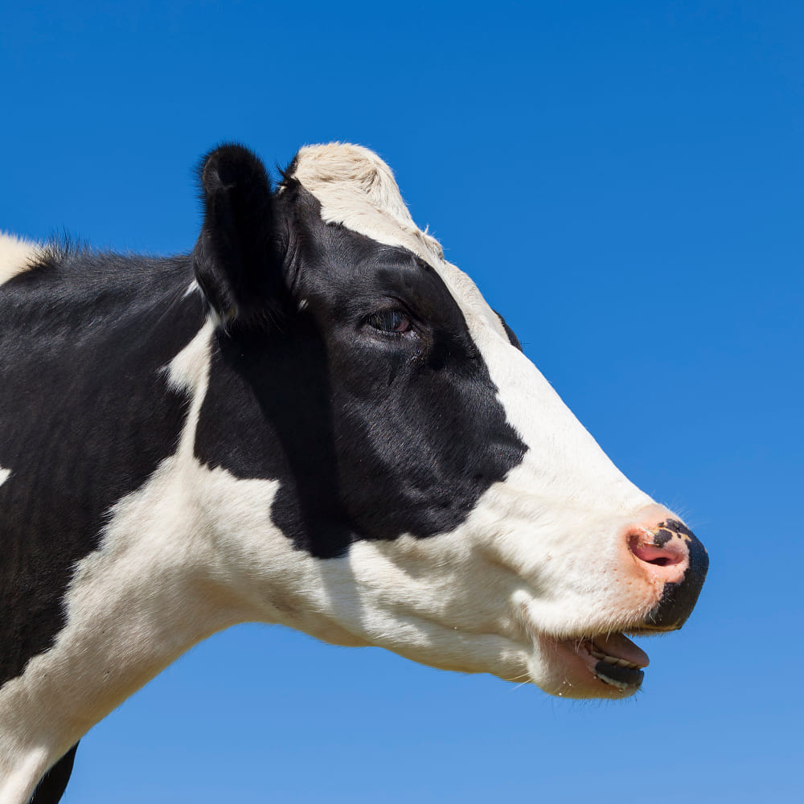

<ion-header [translucent]="true"  class="ion-no-border">
  <ion-toolbar>
    <ion-buttons slot="secondary">
      <!-- <ion-button>
        <ion-icon slot="icon-only" name="person-circle"></ion-icon>
      </ion-button> -->
      <ion-button >
        <ion-icon slot="icon-only" name="notifications-outline"></ion-icon>
      </ion-button>
    </ion-buttons>
    <ion-title>Joto Alert</ion-title>
    <ion-buttons slot="primary">
      <ion-button color="secondary" (click)="logOut()">
        <ion-icon slot="icon-only" name="person-circle"></ion-icon>
      </ion-button>
    </ion-buttons>
  </ion-toolbar>
  <ion-searchbar placeholder="Search..." [(ngModel)]="filterTerm" animated="true"></ion-searchbar>
</ion-header>

<ion-content [fullscreen]="true">

  
  <!-- <ion-button (click)="basicNotifier()">
    <ion-icon slot="start" name="star"></ion-icon>
    Notify 
  </ion-button> -->

  <ion-card *ngFor="let cow of cowList  | filter:filterTerm ">
    
    <ion-card-header>
      <ion-card-title>{{cow.name}}</ion-card-title>
      <ion-card-subtitle>{{cow.tag_no}}</ion-card-subtitle> 
    </ion-card-header>
  
    <ion-item>
      {{cow.isHeifer}}/ {{cow.isServed}}
    </ion-item>
    <ion-card-content>
      Keep close to Nature's heart... and break clear away, once in awhile,
      and climb a mountain or spend a week in the woods. Wash your spirit clean.
      
    </ion-card-content>
    <ion-item (click)="manage(cow)">
      <ion-button fill="outline" slot="end">Manage </ion-button>
    </ion-item>
    
  </ion-card>
  
 
  
  <ion-fab vertical="bottom" horizontal="end" slot="fixed" (click)="presentRegister()">
    <ion-fab-button>
      <ion-icon name="add"></ion-icon>
    </ion-fab-button>
  </ion-fab>

  <ion-header collapse="condense">
    <ion-toolbar>
      <ion-title size="large">Tab 1</ion-title>
    </ion-toolbar>
  </ion-header>

  
  
</ion-content>
